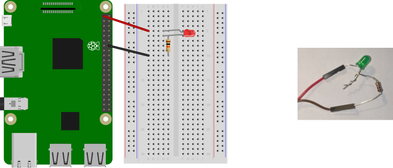
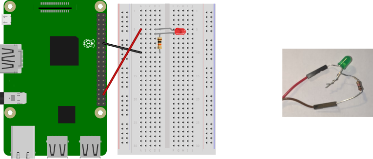

Lab 1: Bootstrapping Raspberry Pi¶
Handed out: Tuesday, January 21, 2020
Due: Monday, January 27, 2020
Introduction¶
In this assignment, you will set up and test a Raspberry Pi 3, ARM64 development environment for your use throughout the rest of the course. You’ll install the necessary tools and write your first bare-metal application, an LED blinky program, in two languages: C and Rust.
This assignment is divided into 4 phases. In the first phase, you’ll install the necessary software to communicate with your Pi from your machine. You’ll also ensure that your Pi works as expected by running a pre-compiled program. In the second phase, you’ll connect GPIO pin 16 on your Raspberry Pi to an LED and run a second pre-compiled program to ensure your connections are sound. In the third phase, you’ll write, cross-compile, and link a C program that toggles GPIO pin 16 on and off, blinking the LED connected to your Pi. Finally, in phase 4, you’ll write, cross-compile, and link the same program in Rust.
Phase 0: Preflight Check¶
First and foremost, check that your Raspberry Pi kit includes all of the following materials:
1 x Raspberry Pi 3/B/B+
1 x microSD card (4-32GB)
1 x microSD reader
We will provide you these items in class:
1 x CP2102 USB
4 x female-female jumper cables
5 x multicolored LEDs
5 x 100 ohm resistors
10 x female-male DuPont jumper cables
Electronics are sensitive to electrostatic discharge, so ensure that you ground yourself by touching something conductive before touching any electronics. Prepare two male to female jumper cables for use as well as one resistor (any resistor!) and one LED. Finally, ready the USB microSD card adapter.
Getting the Skeleton Code¶
To get the skeleton code for lab1, you should fetch the updates from our git repository to your development machine.
$ git fetch skeleton
$ git merge skeleton/lab1
This is the directory structure of our repository.
.
├── bin : common binaries/utilities
├── doc : reference documents
├── ext : external files (e.g., resources for testing)
└── tut : tutorial/practices
├── 0-rustlings
└── 1-blinky : this contains files for lab1
As your changes in the previous lab are in tut/0-rustlings,
it’s unlikely that the merging process should be seamless.
If not, please
resolve the conflict
and proceed to the next phase.
Feel free to explore the contents of the repository.
Phase 1: Baking Pi¶
{kind=link}
The primary means through which you’ll be powering and communicating with your Pi is via a CP2102 USB module. That’s the red USB dongle with the five pins.
If you are working on virtual machine, you need to configure some setting to enable USB port for microSD card adapter and CP2102. Please refer the Tools page if you haven’t set up yet.
To test if your CP2102 is working properly, plug it in to a USB port of the development machine with the yellow cap attached. The cap should connext TXD and RXD pins of the serial device. It simply wires both input and output pins of the serial, so you will receive what you send.
To see the data you receive from the module,
you’ll need to run a serial console emulator that connects to the CP2102
module and reads the incoming data. We’ll use
screen
since it comes preinstalled on Linux. Recalling the
/dev path for your CP2102 module (this will likely be /dev/ttyUSB0),
connect to the CP2102 USB module with screen by running:
$ screen /dev/<your-path> 115200
You may have to use sudo to run the command.
Alternatively, you can add yourself to the dialout user group
to avoid using sudo:
$ sudo gpasswd --add <your-username> dialout
If everything goes well,
you will see what you type in the screen console
as well as the small led lights on the USB module blinking
whenever you type.
If your CP2102 works as expected,
it’s time to wire CP2102 to Raspberry Pi. To exit screen, use <ctrl-a> k
then answer y at the prompt.
Powering the Pi¶
First, disconnect the CP2102 module from your computer. Now connect the Raspberry Pi to the CP2102 module using the four female-female jumper cables. The table below shows which pins on the CP2102 module you should connect to which pins on the Raspberry Pi. You can see the CP2102 module pins’ names if you look at the back of the module’s board.
CP2102 Pin
Pi Physical Pin
+5v
4
GND
6
RXD
8
TXD
10
Here’s how the pins are numbered on the Raspberry Pi 3:
{kind=link}
Here’s what the connections should look like (connections not ordered in this pic, just look at the name of the pins):
{kind=link}
Double-check, triple-check, and quadruple-check your connections! Then, get a friend to double-check your connections! Incorrect wiring can result in a fried Raspberry Pi, which will result in an automatic F in this course. Okay, that last bit isn’t true, but Raspberry Pi 3’s are expensive, and we don’t want to pass out additional ones if we can prevent it. So, quintuple-check your connections before continuing!
If you’re confident in your connections, it’s time to plug in your CP2102 module into your computer. If all went well, you should see a red LED light on your Raspberry Pi shining bright. Congratulations! You’re now able to power and communicate with your Pi.
Running Programs¶
As discussed in lecture, the Raspberry Pi loads programs on boot from the on-board microSD card. We’ll now set up our microSD card with a custom program for the Raspberry Pi to load.
In the repo, you can find a testing programs:
ext/rpi3-gpio16.
To load this program on the Pi,
you can simply copy files in the directory
to the microSD card -
take the microSD card and insert it into the USB microSD card reader.
Then, plug the adapter into your machine. You should see
a new volume mounted on your machine. (If not, see tools page)
Format the microSD card with FAT32 filesystem.
Then copy the all files inside
the directory
(i.e., bootcode.bin, config.txt, fixup.dat, start.elf and kernel8.img),
to the root of the microSD card.
As discussed in lecture, these are four of the five files read by
the GPU on boot. The fifth, kernel8.img, is the boot program,
which we are about to install.
What are bootcode.bin, config.txt, and start.elf?
These specially-named files are recognized by the Raspberry
Pi’s GPU on boot-up and used to configure and boostrap the
system. bootcode.bin is the GPU’s first-stage bootloader.
Its primary job is to load start.elf, the GPU’s
second-stage bootloader. start.elf initializes the ARM CPU,
configuring it as indicated in config.txt, loads
kernel8.img into memory, and instructs the CPU to start
executing the newly loaded code from kernel8.img.
Now, let’s ensure your pi and serial works as expected.
Having copied all the five files inside ext/rpi3-gpio16 from the repo to
the root of the microSD card,unmount the microSD card, disconnect the USB adapter from your
machine, and remove the microSD card from the USB adapter. Ensure
your Raspberry Pi 3 isn’t currently powered. Then, insert the
microSD card into the Rasperry Pi 3. Plug in the Pi. In just a
short moment, you should see a green LED on the Raspberry Pi board
blinking very fast. You should also see a red LED on the USB CP2102
adapter blinking at the same frequency. This indicates that data
is being sent to/from the Raspberry Pi.
This process is very tedious and error-prone. Feel free to use a script prepared (bin/install-kernel.py). You can simply specify a kernel or directory for installation, like bin/install-kernel.py ext/rpi3-gpio16. The script will prompt you for the directory where the microSD card was mounted, after you provide that, the script will copy all the files inside the directory you gave in the arguments to the microSD and unmount the microSD for you; so you can directly disconnect it from the computer.
To see the data the Raspberry Pi is sending, you’ll need to run a serial console emulator that connects to the CP2102 module and reads the incoming data, like described above.
Make sure your Pi has enough power
Your Pi will get its power from your computer, through the CP2102 module. Your computer may not supply enough power, which will cause your Pi to be under-powered. An under-powered Pi have indeterministic behavior, it may even corrupt your microSD card. Make sure that your Pi has enough power by checking the red led light on the corner of your Pi: it should be a steady ON when your Pi is connected.
Phase 2: LED There Be Light¶
In this phase, you’ll connect GPIO pin 16 (physical pin 36) on the Raspberry Pi to an LED light. You’ll test the LED using a pre-compiled binary. Before starting, ensure your Raspberry Pi is unplugged.
Is it safe to simply unplug the USB TTL adapter?
Yes! On a traditional computer, and later on in the course, removing the power source without consideration is a bad idea because operations, typically on the disk, may be in-flight. Stopping these operations midway can result in damaged hardware or inconsistent state on the next boot-up. For now, our Pis have no state or moving hardware, so we don’t need to worry about this. Feel free to simply unplug its power source!
GPIO: General Purpose I/O¶
GPIO stands for General Purpose Input/Output. As the name implies, GPIO is a general mechanism for transmitting data/signals into and out of some device through electrical pins, known as GPIO pins.
A GPIO pin can act as either an output or input. When a GPIO pin is acting as an output, it can either be set on or off. When on, the Raspberry Pi drives the pin at 3.3v. When the GPIO pin is off, no current flows through the pin. When a GPIO pin is acting as an input, the Raspberry Pi reports whether the pin is being driven at 3.3v or not.
GPIO pins are incredibly versatile and can be used to implement a wide array of functionality. You can read more about GPIO on the Raspberry Pi Foundation’s GPIO Usage Documentation.
Testing the LED¶
We’ll start by constructing the circuit below:

This circuit connects an LED to always-on 3.3v power on the Raspberry Pi. Note that pin 1 (+3.3v) on the Raspberry Pi should go to the longer leg of your LED. The shorter leg is connected to the resistor which in-turn is connected to pin 14 (ground) on the Pi.
After you’ve confirmed your connections, plug the Raspberry Pi in. Your LED should turn on. After you’ve confirmed that the LED works as expected, unplug your Rapsberry Pi. Then, move the jumper cable from pin 1 on the Pi to pin 36 (GPIO Pin 16) as illustrated below:

Having installed our ext/rpi3-gpio16 kernel in the microSD card, which
drives GPIO pin 16 on and off repeatedly; once you plug your Pi in with the
microSD inserted, you should see your LED start blinking.
Phase 3: Shining C¶
In this phase, you’ll write the program that produced
ext/rpi3-gpio16/kernel8.img in C.
You’ll write your code in
tut/1-blinky/phase3/blinky.c.
To be able to compile C and assembly programs
for the Raspberry Pi, we’ll use a cross compiler for the
aarch64-none-elf target
that is in the bin directory on the repository.
Talking to Hardware¶
The vast majority of modern hardware devices communicate with software through memory-mapped I/O. The concept is simple: devices expose their functionality through the machine’s memory and provide a specification about what will happen if certain addresses are read or written to. Addresses are usually separated into 32 or 64-bit sized regions known as registers. Registers are usually named to indicate their functionality. Registers can be read-only, write-only, or read/write.
How do we know which registers a device exposes, where in memory they’re mapped, and what they do? Device manufacturers document all of this information in what is typically referred to as a “data sheet”, “device manual”, or simply “documentation”. There is no widespread format for how devices are documented, and documentation quality is hit or miss. Reading and understanding hardware documentation is a skill and art.
GPIO Memory-Mapped Interface¶
The documentation for many of the peripherals on-board the
Rasperry Pi can be found in Broadcom’s BCM2837 ARM Peripherals
Manual
(or in doc/BCM2837-ARM-Peripherals.pdf).
The documentation for GPIO, for example, is on page 89.
Wait, aren’t we using a BCM2837 chip?
If you open the manual we’ve linked you to, you’ll see references to the BCM2835 chip everywhere. This is because we’ve simply taken the documentation for the BCM2835 chip, fixed relevant errata, and fixed the title to say BCM2837.
The BCM2837 and BCM2835 share the same peripherals with the
same relative memory-mapped interfaces. The main difference
is that the chips differ in their physical memory
configuration. This results in the BCM2837 having a peripheral
physical base address of 0x3F000000 as opposed to the
BCM2835’s 0x20000000. But both chips map this range to the
peripheral base address of 0x7E000000. In short, a
peripheral address 0x7EXXXXXX is at physical address
0x3FXXXXXX on the BCM2837. The “BCM2837” documentation
we’ve linked to contains this change.
For this assignment, we’ll only need to use the following three registers:
name |
peripheral address |
description |
size |
read/write |
|---|---|---|---|---|
GPFSEL1 |
0x7E200004 |
GPIO Function Select 1 |
32 bits |
R/W |
GPSET0 |
0x7E20001C |
GPIO Pin Output Set 0 |
32 bits |
W |
GPCLR0 |
0x7E200028 |
GPIO Pin Output Clear 0 |
32 bits |
W |
We’ve copied this information directly from page 90 of the documentation.
Now, read the documentation for GPFSELn register on pages 91
and 92. We write to this register to set up a pin as an output or
input. Which value to which field in register GPFSEL1 must be
written so that GPIO pin 16 is set as an output?
Now, read the documentation for the GPSET0 and GPCLR0
registers on page 95. We write to GPSET0 to set a pin (turn
it on) and write to GPCLR0 to clear a pin (turn it off).
Which value do we write to which field in these registers to
set/clear pin 16?
Writing the Code¶
The tut/1-blinky/phase3/ directory in the assignment skeleton contains a
scaffold for building a binary suitable for running on the
Raspberry Pi 3. We won’t explain crt0.S, layout.ld, or
Makefile for now. Instead, you’ll work on blinky.c.
In blinky.c, you’ll find that we’ve declared the physical
addresses of the three relevant registers at the top of the file.
Your task is to complete the main() function so that GPIO pin
16 is set-up as an output and then continuously set and cleared to
blink the LED. We’ve also provided rudimentary “sleep” functions
that stall the CPU for roughly the amount of time the function
name indicates. You can use these to pause between sets and
clears.
When you are ready to test your program, compile it by running
make in your shell. If all goes well, this will create the
file blinky.bin which is our first bare metal program
running on the Pi. To run the program on the Raspberry Pi,
copy it as kernel8.img to the microSD,
unmount the microSD,
and insert the microSD back to your Pi.
We provide a convenient script to copy the kernel image to the sdcard -
try make install.
If your program blinks the led as expected, proceed to phase 4.
Hint
Pin function selection, setting, and clearing can each be implemented in one line of code.
Hint
Recall the <<, |, &, and ~ bitwise
operators in C.
Hint
Recall that binary/hex numbers in C are written as
0b011 and 0x03, respectively.
Phase 4: Rusting Away¶
In this phase, you’ll write the same program in phase 3,
but with Rust! You’ll write your code in tut/1-blinky/phase4/src/main.rs.
All required programs have already been installed
to your system via bin/setup.sh before. Let’s double check.
$ make --version
GNU Make 4.1
...
$ rustc --version
rustc 1.37.0-nightly (0af8e872e 2019-06-30)
$ cargo xbuild --version
cargo-xbuild 0.5.20
$ cargo objcopy --version
cargo-objcopy 0.1.7
That’s it! You have everything ready for this assignment.
Check your Rust compiler version
Make sure your Rust version matches rustc 1.37.0-nightly (0af8e872e 2019-06-30).
The toolchain name for this version is nightly-2019-07-01.
We will use a few unstable features of Rust from this assignment
(e.g., inline assembly),
and not matching the compiler version may result in
spurious compile error due to the incompatibility.
Writing the Code¶
To write the required code in tut/1-blinky/phase4/src/main.rs, you’ll only
need to know the following Rust:
You can read and write from a raw pointer (
*mut T) using the read_volatile() and write_volatile() methods.For example, if we have the following declarations:
const A: *mut u32 = 0x12 as *mut u32; const B: *mut u32 = 0x34 as *mut u32;
We can write the 32-bit unsigned integer at address
0x12to0x34with the following:B.write_volatile(A.read_volatile());
Local variables can be declared with
let variable_name = expression;.Using the
Adeclaration from the previous example, we can read the value at address0x12to a local variablevalueas follows:let value = A.read_volatile()
You can call a function
fn f(param: usize);withf(123);.A
loopblock can be used to repeat a block infinitely:loop { do_this_again_and_again(); }
Rust defines the following bitwise operators:
!: unary bitwise inversion<<: left shift binary operator>>: right shift binary operator|: bitwise OR binary operator&: bitwise AND binary operator
You are now ready to implement the blink program in
tut/1-blinky/phase4/src/main.rs. Translate your C implementation into Rust
in the kmain function. You’ll find that we’ve declared the
physical addresses of the three relevant registers at the top of
the file. We’ve also provided a rudimentary “sleep” function that
stalls the CPU for roughly the amount of time the function name
indicates. You can use the function to pause between sets and
clears.
When you are ready to test your program, compile it by running
make from the phase4 directory in your shell. If all goes
well, this will create the file build/blinky.bin. You can
install blinky.bin to the microSD via make install.
If your Rust program starts blinking the led,
you have successfully completed assignment 0!
Proceed to the next phase for
submission instructions.
Hint
Your Rust and C code should look very similar.
Submission¶
Once you’ve completed the tasks above, you’re done and ready to submit! Ensure you’ve committed your changes. Any uncommitted changes will not be visible to us, thus unconsidered for grading.
When you’re ready, push a commit to your GitHub repository
with a tag named lab1-done.
$ git status
$ git add -A
$ git commit -a -m "yay, lab1 done!"
$ git tag lab1-done
$ git push --tags